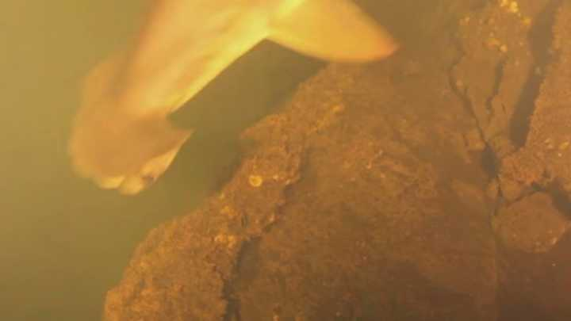

2020 is just beginning...
Lava Sharks!
Hammerhead sharks, along with silk sharks, were found living in a volcano. PC David Clode via Unsplash. Scientists captured video evidence of sharks living in a volcano. The scientists dropped a camera into the main crater of the volcano Kavachi, located in the Solomon Islands.
Scientists captured video evidence of sharks living in a volcano. The scientists dropped a camera into the main crater of the volcano Kavachi, located in the Solomon Islands. Kavachi was not actively erupting when the team captured the footage, but just to be safe, they only left the camera in the underwater crater for an hour. The water inside the crater is hot, acidic, and clouded with sediment, making the inside of a volcano an unlikely place for marine life. Scientists worldwide were shocked when the footage from the inside of Kavachi captured two different species of sharks. Silky sharks and Hammerhead sharks were both recorded swimming in the crater. The video also recorded jellyfish, snappers, and a stingray living in the crater.
Image by Laura College
Shark scientists are planning to tag one of these sharks living in a volcano in the future to find out more about their habits. No one knows what happens to the sharks when the volcano is actively erupting. It could be the case that they sense an imminent eruption and temporarily leave. Or, perhaps the sharks blow up when the volcano does.
The team returned to Kavachi during an active eruption to gather more data about the volcano. They made cheap robots out of used PVC pipe and a few hundred dollars of electronic equipment then dropped these robots over the volcano. While they didn’t see any sharks in Kavachi during the eruption, they managed to collect more data.
Learn more about this